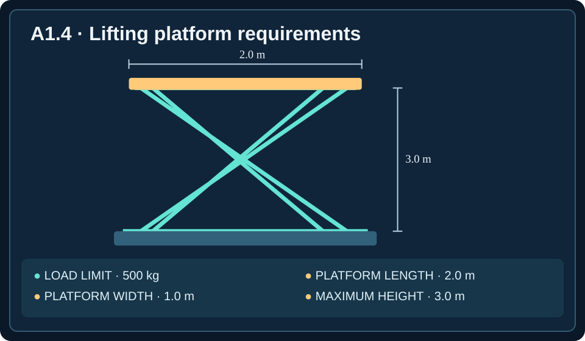

Semester Objective A-O2: Apply an iterative engineering design process using criteria, constraints, evidence, and documentation.
Unit Essential Question: How do mechanical engineers use scientific knowledge to develop useful, safe, and reliable technology?
Lesson Learning Target: Convert needs into measurable criteria and constraints.
Learning objectives: Define an engineering problem; distinguish criteria and constraints; write testable specifications; evaluate feasibility; select appropriate verification methods; and prioritize among feasible designs.
🎧 Listen to the Complete Lesson
Play the complete narration while following along with the reading. You can pause, replay, or skip ahead at any time.
A design begins with a problem
A community center wants a portable ramp so people can move equipment between a loading area and a raised platform. The staff describes the desired ramp as “strong, lightweight, inexpensive, and easy to use.” Those words communicate a genuine need, but they do not tell an engineer exactly what to design or how to determine whether the finished ramp works. What counts as strong? How light is lightweight? How much can the organization spend? A successful engineering project begins by translating a broad need into a clear, testable problem statement.
An engineering problem is a practical need that can be addressed through a designed solution. Engineers do not start by choosing their favorite material or drawing the first idea that comes to mind. They investigate who will use the product, what it must accomplish, and what conditions limit the possible solutions. This early work is sometimes called problem definition. It prevents teams from spending time and money developing a product that solves the wrong problem.
For the ramp, a more useful problem statement might be: “Design a portable ramp that allows staff to move loaded equipment safely onto a platform 0.45 meters high, within the facility’s budget and storage space.” This statement identifies the user, the function, and important operating conditions. It still needs numerical requirements before competing designs can be evaluated objectively.
Stakeholders and the real need
A stakeholder is a person or group affected by an engineering solution. The person who purchases a machine is not necessarily the person who operates, maintains, or depends on it. A hospital bed, for example, affects patients, nurses, maintenance workers, and hospital administrators. Each group may identify different needs: comfort, safe lifting, easy cleaning, serviceability, or purchase cost.
Engineers gather information by asking questions, observing existing workflows, examining the environment, and reviewing past failures. A request for a “faster conveyor” may actually be a request to reduce waiting time at a packaging station. If the delay comes from the worker who seals the boxes rather than the belt itself, simply installing a faster motor might not solve the problem. Defining the actual need helps engineers avoid confusing a proposed solution with the underlying problem.
A useful problem definition describes the desired function without prematurely requiring one specific design. “Move cartons from the packing station to the loading area” leaves room for several possible mechanisms. “Install a particular brand of belt conveyor” assumes the solution before the alternatives have been investigated.

Criteria: what success looks like
A design criterion is a standard used to judge whether a solution performs as intended. Criteria often describe capabilities or qualities the design must achieve, such as lifting a specified load, moving at a required speed, or maintaining a target temperature. Engineers try to express criteria in measurable terms.
Suppose a powered cart is intended to transport supplies through a school building. One criterion could be that it carries at least 100 kilograms of supplies. Another might be that it travels at a controlled speed without spilling its load. A criterion is useful only if the team can explain how success will be determined. Saying that the cart should be “good” or “convenient” does not provide a dependable basis for comparison.
Some criteria are minimum performance requirements, such as carrying at least 100 kilograms. Others describe desirable qualities that may be improved beyond the minimum, such as minimizing the effort required to steer. Engineers must distinguish required performance from optional preferences so that they do not sacrifice essential functions to achieve a less important benefit.
Constraints: the limits of a design
A constraint is a restriction that a proposed solution must satisfy. Constraints may involve maximum cost, available space, allowable mass, material availability, power consumption, manufacturing capabilities, or safety regulations. A solution that performs its main function but violates a mandatory constraint is not acceptable.
Imagine a lift that must fit through a doorway only 0.95 meters wide. Doorway clearance is a geometric constraint. A maximum purchase price of $1,200 is a cost constraint. A limit of 600 watts on electrical input is a power constraint. The team cannot simply ignore these limits because one alternative is faster or looks more impressive.
Criteria and constraints can sometimes both be written as numerical requirements. Their distinction is their role in the design decision: criteria describe the performance the solution is intended to deliver, while constraints define the boundaries within which it must operate. The same project can require both a minimum lifting capacity and a maximum equipment mass.
Move equipment→CRITERION
Carry ≥ 180 kg+CONSTRAINT
Cost ≤ $750
From vague wishes to specifications
Engineers convert qualitative wishes into specifications: precise statements of required performance or limits, including the conditions under which they will be evaluated. A specification should identify the quantity being measured, its acceptable value, and enough context to make testing repeatable.
Consider the request “Make the handcart easy to push.” One engineer might interpret this as a comfortable handle, while another might focus on wheel friction. A stronger specification is: “On a clean, level concrete floor, the force required to start the cart moving with a 75-kilogram load shall not exceed 55 newtons.” This statement provides a measurable threshold and a defined test condition.
Similarly, “Make the fan quiet” could become “The sound level shall not exceed 48 dBA measured 1 meter from the fan at its rated operating speed.” The unit dBA is a sound-level measure adjusted to approximate human hearing. A statement such as “the adjustable table must be fast” might become “The tabletop shall rise 0.35 meters in no more than 18 seconds while supporting a 90-kilogram load.” The goal is not to add numbers for decoration; it is to make decisions and verification possible.
A requirement has three useful parts
A strong engineering requirement usually contains three elements: quantity, threshold, and test condition. The quantity identifies what will be measured, such as distance, time, force, temperature, sound, or electrical power. The threshold specifies what counts as acceptable: at least, at most, within a range, or equal to a target within an allowed tolerance. The test condition describes the circumstances under which the measurement applies.
For example, “The conveyor shall transport at least 36 cartons per minute while carrying cartons of the specified size and mass” defines throughput, a minimum threshold, and an operating condition. Throughput means the amount of material or number of items processed per unit time. Without the specified load or carton type, different tests might produce results that are not comparable.
Notice the direction of each inequality. “At least 36 cartons per minute” means 36 or more is acceptable. “No more than 900 watts” means 900 or less is acceptable. Students often make mistakes when they overlook these phrases. In engineering, the difference between a minimum and a maximum can determine whether a design passes or fails.
Starting force+THRESHOLD
≤ 55 N+CONDITION
Level floor, loaded cart
Checking feasibility against every requirement
A design is feasible when it satisfies all mandatory requirements. Engineers evaluate feasibility before choosing which acceptable design they prefer. A design that excels in one area but fails an essential limit must be rejected or revised.
Consider three proposed portable lifts. The project requires a lifting capacity of at least 180 kilograms, a purchase cost of no more than $750, and a machine mass of no more than 32 kilograms.
Worked example: choose a feasible lift
Use the requirements and data below. Check each alternative against all three limits rather than choosing the highest capacity or lowest price alone.
| Design | Capacity | Cost | Machine mass |
|---|---|---|---|
| Lift A | 210 kg | $790 | 29 kg |
| Lift B | 195 kg | $720 | 31 kg |
| Lift C | 170 kg | $650 | 27 kg |
Lift A: Its 210-kilogram capacity and 29-kilogram mass satisfy the requirements, but the $790 cost exceeds the $750 maximum. It is not feasible as proposed.
Lift B: Its 195-kilogram capacity exceeds the 180-kilogram minimum, its $720 cost is below the maximum, and its 31-kilogram mass is below the limit. It is feasible.
Lift C: Its price and machine mass satisfy the limits, but its 170-kilogram capacity is below the minimum. It is not feasible as proposed.
Lift B is the only feasible option. Notice that the cheapest alternative was not acceptable because it failed a required function. Likewise, the strongest alternative was not acceptable because it exceeded the budget. Engineers must respect all mandatory requirements, not just the ones they find most interesting.
Verification: how will we know?
A requirement is useful only if it can be checked. Verification is the process of determining whether a product meets a stated specification. The engineer should identify the appropriate measurement or test before declaring a design successful.
If a ramp must support a specified load without permanent bending, the engineer needs a controlled load test and measurements of its shape before and after unloading. Merely looking at the ramp does not verify its load capacity. If a conveyor must transport a specified number of packages per minute, the engineer can count the packages delivered during a measured time interval. Measuring the motor housing width would not verify throughput.
Verification must match the actual requirement. If a ventilation fan must use less than 180 watts while delivering a specified airflow, measuring electrical input power alone is insufficient: the airflow condition must also be confirmed. An engineer could reduce power consumption simply by slowing the fan until it no longer performs its intended job. Good testing checks both the limit and the required operating condition.
Trade-offs and engineering priorities
Even when several designs meet every mandatory requirement, they may not perform equally well. A trade-off occurs when improving one desirable feature makes another feature worse. A stronger component might weigh more. A faster machine might cost more. A quieter fan might require a larger enclosure.
Engineers use priorities to decide among feasible alternatives. Suppose two warehouse lifts both meet the minimum capacity, maximum mass, and safety requirements. Lift X costs $620 and completes a lift in 24 seconds. Lift Y costs $740 and completes a lift in 15 seconds. If the project's highest priority is minimizing purchase cost, Lift X is the stronger choice. If reducing cycle time is the top priority and the higher cost is acceptable, Lift Y may be preferable.
Priorities should not override mandatory safety or performance requirements. A design that fails a required load test does not become acceptable because it is inexpensive. First determine which alternatives are feasible; then compare them according to the stated goals.
Why requirements change during design
Engineering problem definition is not always finished after one meeting. New evidence can reveal a missing requirement. A prototype may fit the required space but be difficult to maintain. Users may discover that a handle is uncomfortable or a control is confusing. Manufacturing engineers may identify a part that cannot be produced reliably at the planned cost.
When requirements change, engineers document the reason and reconsider the design. This does not mean that specifications are meaningless. On the contrary, written requirements make changes visible and help the team understand their consequences. An undocumented change can cause different team members to work toward conflicting goals.
A design review is a structured evaluation of a proposed solution and its requirements. Reviews allow specialists to identify overlooked constraints, questionable assumptions, or gaps in verification plans before those issues become expensive failures.
Putting the method together
Figure 1.4 — Defining an Engineering Problem
Need
Describe the problem to solve
Criteria
Specify what success looks like
Constraints
Identify limits and restrictions
Verification
Define how requirements are tested
A strong engineering problem definition answers five questions: Who needs the solution? What useful function must it perform? What measurable performance criteria define success? What constraints limit the design? How will each requirement be verified?
Imagine designing a battery-powered equipment cart for a school. The users are maintenance workers. The cart must transport supplies between buildings. It must carry at least 85 kilograms, fit through doors at least 0.85 meters wide, and operate within the available budget. A verification plan would measure load capacity, cart width, and actual operating performance under specified conditions.
This method connects directly to the rest of mechanical engineering. Design engineers need requirements before developing mechanisms. Manufacturing engineers need specifications to produce consistent parts. Test engineers need measurable targets to verify performance. Reliability engineers need to know what successful operation looks like before they can investigate failures. Defining the problem carefully makes all later engineering work more effective.
Lesson A1.4 Glossary
Click a term to reveal its definition.
Engineering problem
A practical need that can be addressed through a designed solution.
Problem definition
The process of clarifying the need, users, requirements, and limitations before selecting a solution.
Problem statement
A concise description of the practical need and intended function.
Stakeholder
A person or group affected by a proposed engineering solution.
Design criterion
A standard used to judge whether a solution performs as intended.
Minimum performance requirement
A required level of performance that a design must meet or exceed.
Constraint
A restriction or limit that an engineering solution must satisfy.
Geometric constraint
A restriction involving physical dimensions or available space.
Cost constraint
A maximum or other limitation on spending.
Power constraint
A limit on the power a system may use.
Specification
A precise statement of required performance or limits, including relevant test conditions.
Quantity
A measurable property such as force, speed, distance, time, or temperature.
Threshold
The boundary value that determines whether a requirement is satisfied.
Test condition
The circumstances under which a requirement is measured.
Throughput
The number of items or amount of material processed per unit time.
Feasible
Meeting every mandatory requirement.
Verification
Checking whether a product satisfies a stated specification.
Trade-off
A situation in which improving one desirable feature worsens another.
Priority
A stated preference used to rank alternatives that already meet mandatory requirements.
Design review
A structured evaluation of a proposed design, its requirements, and its evidence.
Engineering Requirements Decision Lab
Act as a project engineer. Evaluate requirements, test plans, and design alternatives. Check each answer for immediate feedback; retry until you find a defensible solution.
All seven challenges completed!
You identified measurable requirements, checked feasibility, and used evidence to make design decisions.